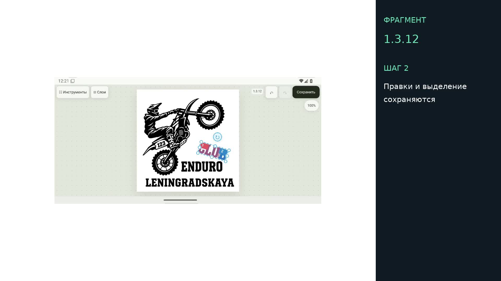

Вернуться в редактор1.3.12: запуск и поворот Android
Проверка APK на эмуляторе с профилем Pixel 6, Android 15 (API 35). При изменении размера окно пересчитывается, логотип вписывается целиком. Правки и выделение сохраняются. Во время загрузки стартового изображения показано «Загружаем пример…».
- Запустите приложение вертикально. Пока стартовое изображение загружается, видна короткая надпись; после загрузки она исчезает.
- Разделите картинку, выберите объект, измените его положение, цвет и угол. Поверните телефон горизонтально и обратно: картинка вписывается, изменения и выделение остаются.
- Закройте приложение и запустите его сразу горизонтально: логотип должен быть целиком.
- Откройте панель и нажмите «Свернуть»: логотип целиком виден, выбранный слой и вкладка сохраняются при повторном открытии.
- Во вкладке «Проект» первыми идут открытие и сохранение проекта. Обновления и служебные ссылки собраны в «О приложении».
- В сохранении подвигайте «Масштаб экспорта»: размеры в пикселях меняются сразу, кнопка «Сохранить файл» остаётся видимой.

29 секунд · Silero Ксения · проверка в браузереНажмите на снимок, чтобы открыть его в полном размере. Во время поворота кратко показывается вписанная копия холста, пока Android готовит новый кадр интерфейса.
Панели и сохранение
Снимки настоящего APK
Исходная запись поворотов без монтажа · Технический отчёт проверки
Прогон поворотов и сохранения правок · Прогон панелей и экспорта